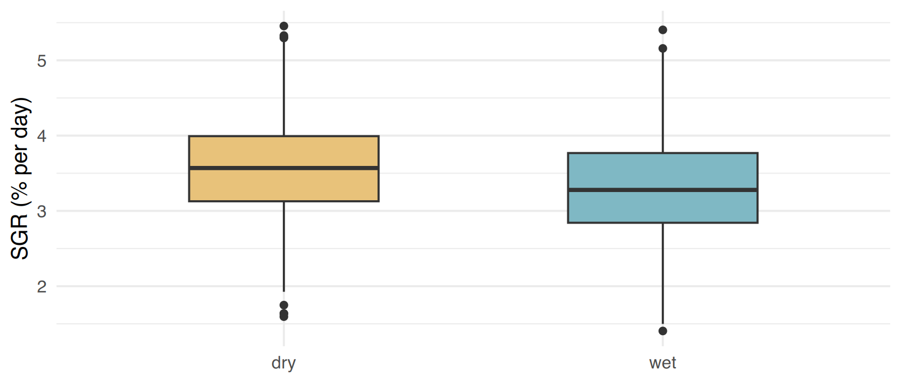
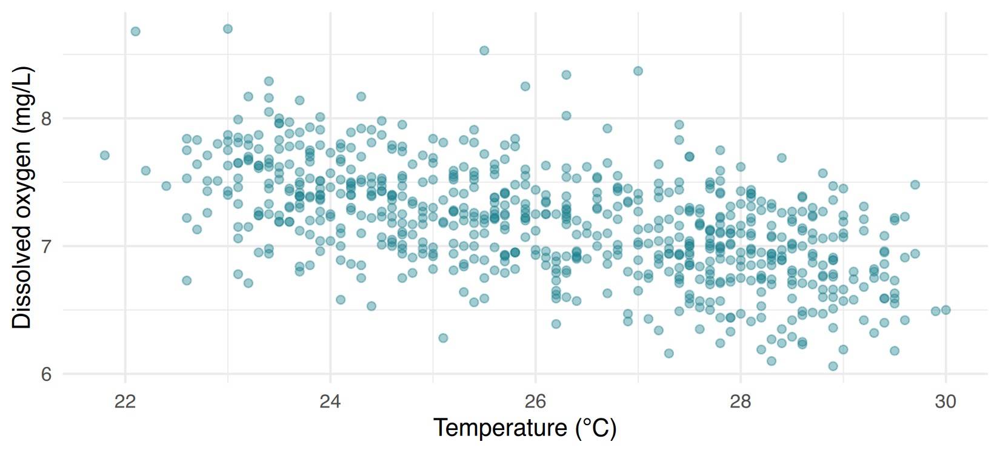
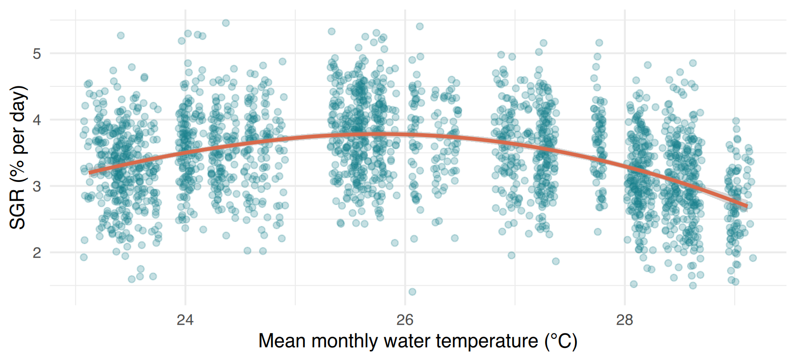

t.test() and wilcox.test();chisq.test(),
prop.test() and fisher.test();t.test() et wilcox.test()
;chisq.test(), prop.test() et
fisher.test() ;Data of this session (simulated). Four datasets you already know, each answering one question of the cooperative or of the environment office:
I3_seaweed_analysis.csv, cooperative logbooks, 2024–2025):
does growth (SGR) differ between the dry and the wet season? Does it
follow water temperature?I4_households_clean.csv, 420 face-to-face interviews,
2025): do households headed by women and men declare different
incomes?I0_farmers.csv, 96
cooperative members): do women and men use the two farming techniques in
the same proportions?I2_water_quality_clean.csv): 10 fixed stations sampled
monthly with a multiparameter probe, 2023–2025. Was 2025 warmer than
2024? Is dissolved oxygen related to temperature?Données de cette séance (simulées). Quatre jeux que vous connaissez déjà, chacun répondant à une question de la coopérative ou du service de l’environnement :
I3_seaweed_analysis.csv, cahiers de la coopérative,
2024–2025) : la croissance (SGR) diffère-t-elle entre saison sèche et
saison des pluies ? Suit-elle la température de l’eau ?I4_households_clean.csv, 420 entretiens en face à face,
2025) : les ménages dirigés par des femmes et par des hommes
déclarent-ils des revenus différents ?I0_farmers.csv, 96 membres de la coopérative) : femmes et
hommes utilisent-ils les deux techniques dans les mêmes proportions
?I2_water_quality_clean.csv) : 10 stations fixes
échantillonnées chaque mois avec une sonde multiparamètre, 2023–2025.
2025 a-t-elle été plus chaude que 2024 ? L’oxygène dissous est-il lié à
la température ?⇩ I3_seaweed_analysis.csv ⇩ I4_households_clean.csv ⇩ I0_farmers.csv ⇩ I2_water_quality_clean.csv
A test is chosen before looking at p-values, from three questions: (1) what is my question (difference of means, of proportions, or relationship)? (2) what type are my variables (numeric or categorical)? (3) are the observations independent, or are the same units measured twice (paired)? Then the shape of the data (Session I9) tells you whether the parametric version is reasonable.
Un test se choisit avant de regarder les p-values, à partir de trois questions : (1) quelle est ma question (différence de moyennes, de proportions, ou relation) ? (2) de quel type sont mes variables (numériques ou catégorielles) ? (3) les observations sont-elles indépendantes, ou les mêmes unités sont-elles mesurées deux fois (apparié) ? Ensuite, la forme des données (séance I9) indique si la version paramétrique est raisonnable.
| Parametric | Non-parametric | |
|---|---|---|
| Works on | the values themselves (means, SD) | the ranks of the values (1st, 2nd, 3rd…) |
| Assumes | approximately normal data (or large groups, Session I9) | only that the distributions have a similar shape |
| Examples | t.test(), Pearson cor.test() |
wilcox.test(), Spearman
cor.test(method = "spearman") |
| Strength | more powerful when the assumptions hold; gives an effect size in the units of the data | robust to outliers and skewness |
| Weakness | sensitive to outliers and strong skewness, especially in small samples | slightly less powerful; compares “typical values” rather than means |
Rule of thumb: roughly normal (or large groups without extreme outliers) → parametric. Small groups and clearly skewed, or strong outliers → either transform (log, Session I9) and use the parametric test, or use the non-parametric test. Choose one approach and justify it — do not run both and keep the one that “works”.
| Paramétrique | Non paramétrique | |
|---|---|---|
| Travaille sur | les valeurs elles-mêmes (moyennes, ET) | les rangs des valeurs (1er, 2e, 3e…) |
| Suppose | des données à peu près normales (ou de grands groupes, séance I9) | seulement que les distributions ont une forme semblable |
| Exemples | t.test(), cor.test() de Pearson |
wilcox.test(),
cor.test(method = "spearman") de Spearman |
| Atout | plus puissant quand les hypothèses sont vérifiées ; donne un effet dans les unités des données | robuste aux valeurs extrêmes et à l’asymétrie |
| Faiblesse | sensible aux valeurs extrêmes et à une forte asymétrie, surtout avec de petits échantillons | un peu moins puissant ; compare des « valeurs typiques » plutôt que des moyennes |
Règle pratique : à peu près normal (ou grands groupes sans valeurs extrêmes) → paramétrique. Petits groupes et nettement asymétrique, ou fortes valeurs extrêmes → soit transformer (log, séance I9) et utiliser le test paramétrique, soit utiliser le test non paramétrique. Choisissez une approche et justifiez-la — ne faites pas les deux pour garder celle qui « marche ».
SGR is roughly normal (Session I9) and the groups are large: the t-test is appropriate. Always plot first.
Le SGR est à peu près normal (séance I9) et les groupes sont grands : le test t est adapté. Toujours tracer d’abord.
ggplot(seaweed, aes(season, sgr, fill = season)) +
geom_boxplot(width = 0.5, na.rm = TRUE, show.legend = FALSE) +
scale_fill_manual(values = c(dry = "#e8c27a", wet = "#7fb8c4")) +
labs(x = NULL, y = "SGR (% per day)") + theme_c()
#>
#> Welch Two Sample t-test
#>
#> data: sgr by season
#> t = 9.5646, df = 2267.1, p-value < 2.2e-16
#> alternative hypothesis: true difference in means between group dry and group wet is not equal to 0
#> 95 percent confidence interval:
#> 0.2071039 0.3139304
#> sample estimates:
#> mean in group dry mean in group wet
#> 3.562905 3.302388How to read the output:
t = 9.56: the difference of means divided by its
standard error. Far from 0 → the difference is large compared with
sampling noise.df: degrees of freedom. The decimal value shows that R
used Welch’s version (the default), which does not
assume equal variances in the two groups — keep it.p-value < 2.2e-16: the smallest number R prints.
Write “p < 0.001”.95 percent confidence interval: the difference dry −
wet is between 0.21 and 0.31 % per day. This is the effect size
you should report.Comment lire la sortie :
t = 9.56 : la différence de moyennes divisée par son
erreur standard. Loin de 0 → la différence est grande par rapport au
bruit d’échantillonnage.df : degrés de liberté. La valeur décimale montre que R
a utilisé la version de Welch (par défaut), qui ne
suppose pas des variances égales dans les deux groupes — gardez-la.p-value < 2.2e-16 : le plus petit nombre que R
affiche. Écrivez « p < 0,001 ».95 percent confidence interval : la différence sèche −
pluies est comprise entre 0,21 et 0,31 % par jour. C’est la
taille d’effet à rapporter.#> mean in group dry mean in group wet
#> 3.562905 3.302388#> mean in group dry
#> 0.2605172#> [1] 0.2071039 0.3139304
#> attr(,"conf.level")
#> [1] 0.95#> [1] 2.821748e-21Report it like this. “Seaweed grew faster in the dry season (mean SGR 3.56 vs 3.30 % day⁻¹; difference 0.26, 95 % CI 0.21–0.31; Welch t-test, t = 9.56, df = 2267, p < 0.001).” The reader learns the direction, the size, the precision and the test in one sentence.
Rapportez-le ainsi. « Les algues ont poussé plus vite en saison sèche (SGR moyen 3,56 contre 3,30 % j⁻¹ ; différence 0,26, IC 95 % 0,21–0,31 ; test t de Welch, t = 9,56, ddl = 2267, p < 0,001). » Le lecteur apprend en une phrase le sens, la taille, la précision et le test.
Income is strongly right-skewed (Session I9). Two valid options, decided before testing:
Le revenu est fortement asymétrique à droite (séance I9). Deux options valides, décidées avant de tester :
Option A: non-parametric (ranks)Option A : non paramétrique (rangs)
#>
#> Wilcoxon rank sum test with continuity correction
#>
#> data: monthly_income_mga by head_sex
#> W = 20948, p-value = 0.4251
#> alternative hypothesis: true location shift is not equal to 0#> Female Male
#> 440000 421000wilcox.test() (Wilcoxon rank-sum, also called
Mann–Whitney) ranks all incomes together and checks
whether one group tends to have higher ranks. Both options agree:
no evidence of a difference (p = 0.43 and 0.61). Option
B has an advantage: exp() of the difference of log-means is
a ratio of geometric means (“x % higher”), which is
easy to interpret. Note the message “with continuity correction”: with
large samples R uses an approximation — it is normal.
wilcox.test() (Wilcoxon de la somme des rangs, aussi
appelé Mann–Whitney) classe tous les revenus ensemble
et vérifie si un groupe a tendance à avoir des rangs plus élevés. Les
deux options concordent : pas de preuve d’une
différence (p = 0,43 et 0,61). L’option B a un avantage :
exp() de la différence des moyennes de log est un
rapport de moyennes géométriques (« x % plus élevé »),
facile à interpréter. Le message « with continuity correction » : avec
de grands échantillons R utilise une approximation — c’est normal.
Was the water warmer in 2025 than in 2024? The same 10 stations were measured both years: a warm station is warm both years. Treating the two years as independent groups would mix the large differences between stations with the small change between years. A paired test works on the 10 differences (2025 − 2024), one per station.
L’eau était-elle plus chaude en 2025 qu’en 2024 ? Les mêmes 10 stations ont été mesurées les deux années : une station chaude l’est les deux années. Traiter les deux années comme des groupes indépendants mélangerait les grandes différences entre stations et le petit changement entre années. Un test apparié travaille sur les 10 différences (2025 − 2024), une par station.
wq$year <- as.integer(format(wq$date, "%Y"))
station_year <- wq %>%
filter(year %in% c(2024, 2025)) %>%
group_by(station, year) %>%
summarise(temp = mean(temp_C, na.rm = TRUE), .groups = "drop") %>%
pivot_wider(names_from = year, values_from = temp, names_prefix = "y") # Session I2: one row per station
station_year#> # A tibble: 10 × 3
#> station y2024 y2025
#> <chr> <dbl> <dbl>
#> 1 WQ01 26.3 26.1
#> 2 WQ02 26.2 26.2
#> 3 WQ03 26.3 26.1
#> 4 WQ04 26.0 26.0
#> 5 WQ05 26.5 26.3
#> 6 WQ06 26.4 26.0
#> 7 WQ07 26.1 26.1
#> 8 WQ08 26.2 26.2
#> 9 WQ09 26.0 26.0
#> 10 WQ10 26 26.0#>
#> Paired t-test
#>
#> data: station_year$y2025 and station_year$y2024
#> t = -2.7964, df = 9, p-value = 0.02084
#> alternative hypothesis: true mean difference is not equal to 0
#> 95 percent confidence interval:
#> -0.18050330 -0.01906192
#> sample estimates:
#> mean difference
#> -0.09978261The rows must be in the same order for both vectors
(here guaranteed by the wide table: one row = one station). With only 10
differences, check their shape
(hist(station_year$y2025 - station_year$y2024)); if in
doubt, use wilcox.test(..., paired = TRUE).
Look at the effect size! The difference is −0.10 °C (95 % CI −0.18 to −0.02): statistically significant (p = 0.02), but a tenth of a degree is far smaller than the seasonal variation (several °C). Significant does not mean important. Whether 0.1 °C matters is an ecological question, not a statistical one.
Les lignes doivent être dans le même ordre pour les
deux vecteurs (ici garanti par le tableau large : une ligne = une
station). Avec seulement 10 différences, vérifiez leur forme
(hist(station_year$y2025 - station_year$y2024)) ; en cas de
doute, utilisez wilcox.test(..., paired = TRUE).
Regardez la taille d’effet ! La différence vaut −0,10 °C (IC 95 % −0,18 à −0,02) : statistiquement significative (p = 0,02), mais un dixième de degré est bien plus petit que la variation saisonnière (plusieurs °C). Significatif ne veut pas dire important. Savoir si 0,1 °C compte est une question écologique, pas statistique.
Do women and men use the two techniques in the same proportions? Both variables are categorical: we compare counts in a contingency table, never the percentages directly (percentages hide the sample size).
Femmes et hommes utilisent-ils les deux techniques dans les mêmes proportions ? Les deux variables sont catégorielles : on compare des effectifs dans un tableau de contingence, jamais directement les pourcentages (ils cachent la taille de l’échantillon).
#>
#> long-line off-bottom
#> F 29 26
#> M 14 27#>
#> long-line off-bottom
#> F 52.7 47.3
#> M 34.1 65.953 % of women use long-lines against 34 % of men. Is a difference of 19 percentage points convincing with 96 farmers? The chi-square test compares the observed counts with the counts expected if technique did not depend on sex. Its approximation is reliable only if all expected counts are ≥ 5 — check it.
53 % des femmes utilisent les cordes flottantes contre 34 % des hommes. Une différence de 19 points de pourcentage est-elle convaincante avec 96 cultivateurs ? Le test du khi-deux compare les effectifs observés aux effectifs attendus si la technique ne dépendait pas du sexe. Son approximation n’est fiable que si tous les effectifs attendus sont ≥ 5 — vérifiez-le.
#>
#> long-line off-bottom
#> F 24.63542 30.36458
#> M 18.36458 22.63542#>
#> Pearson's Chi-squared test with Yates' continuity correction
#>
#> data: tab
#> X-squared = 2.5712, df = 1, p-value = 0.1088#>
#> Fisher's Exact Test for Count Data
#>
#> data: tab
#> p-value = 0.09696
#> alternative hypothesis: true odds ratio is not equal to 1
#> 95 percent confidence interval:
#> 0.8652186 5.4223588
#> sample estimates:
#> odds ratio
#> 2.133751#>
#> 2-sample test for equality of proportions with continuity correction
#>
#> data: tab
#> X-squared = 2.5712, df = 1, p-value = 0.1088
#> alternative hypothesis: two.sided
#> 95 percent confidence interval:
#> -0.03163446 0.40325309
#> sample estimates:
#> prop 1 prop 2
#> 0.5272727 0.3414634All three agree (p ≈ 0.10–0.11): no convincing
evidence that technique depends on sex. But look at the
confidence interval of prop.test(): the difference could be
anywhere from about −3 to +40 percentage points. With only 96 farmers we
simply cannot tell — this is not proof that women and
men farm alike. Report: “53 % of women and 34 % of men used long-lines
(χ² = 2.57, df = 1, p = 0.11; n = 96)”.
For a 2 × 2 table R applies Yates’ continuity
correction by default (a small conservative adjustment).
fisher.test() also gives an odds ratio, a
common effect size for 2 × 2 tables.
Les trois concordent (p ≈ 0,10–0,11) : pas de preuve
convaincante que la technique dépende du sexe. Mais regardez
l’intervalle de confiance de prop.test() : la différence
pourrait aller d’environ −3 à +40 points de pourcentage. Avec seulement
96 cultivateurs, nous ne pouvons simplement pas
trancher — ce n’est pas une preuve que femmes et hommes
cultivent de la même façon. Rapportez : « 53 % des femmes et 34 % des
hommes utilisaient les cordes flottantes (χ² = 2,57, ddl = 1, p = 0,11 ;
n = 96) ».
Pour un tableau 2 × 2, R applique par défaut la correction de
continuité de Yates (un petit ajustement prudent).
fisher.test() donne aussi un odds ratio
(rapport des cotes), une taille d’effet courante pour les tableaux 2 ×
2.
Try it. In the survey, do households headed by women
do seaweed farming (does_seaweed) as often as those headed
by men? Build the table, the row percentages, check the expected counts
and run the test.
À vous. Dans l’enquête, les ménages dirigés par des
femmes cultivent-ils les algues (does_seaweed) aussi
souvent que ceux dirigés par des hommes ? Construisez le tableau, les
pourcentages par ligne, vérifiez les effectifs attendus et faites le
test.
A correlation coefficient (between −1 and +1) measures how two numeric variables vary together: 0 = no association, ±1 = perfect association. Pearson’s r measures a linear (straight-line) association and uses the values; Spearman’s ρ (rho) uses the ranks and measures a monotonic association (always increasing or always decreasing, not necessarily straight). Spearman is the non-parametric choice: robust to outliers and to skewed variables.
Un coefficient de corrélation (entre −1 et +1) mesure comment deux variables numériques varient ensemble : 0 = pas d’association, ±1 = association parfaite. Le r de Pearson mesure une association linéaire (en ligne droite) et utilise les valeurs ; le ρ (rho) de Spearman utilise les rangs et mesure une association monotone (toujours croissante ou toujours décroissante, pas forcément droite). Spearman est le choix non paramétrique : robuste aux valeurs extrêmes et aux variables asymétriques.
ggplot(wq, aes(temp_C, DO_mgL)) + geom_point(alpha = 0.4, colour = "#1b7f8c", na.rm = TRUE) +
labs(x = "Temperature (°C)", y = "Dissolved oxygen (mg/L)") + theme_c()
#>
#> Pearson's product-moment correlation
#>
#> data: wq$temp_C and wq$DO_mgL
#> t = -17.472, df = 698, p-value < 2.2e-16
#> alternative hypothesis: true correlation is not equal to 0
#> 95 percent confidence interval:
#> -0.6011396 -0.4978562
#> sample estimates:
#> cor
#> -0.5516088The cloud is roughly a straight band without extreme points → Pearson
is appropriate: r = −0.55 (95 % CI −0.60 to −0.50), p < 0.001. Warmer
water holds less oxygen: a well-known physical relationship.
r^2 ≈ 0.30: temperature “accounts for” about 30 % of the
variation of DO.
Le nuage est à peu près une bande droite sans points extrêmes →
Pearson est adapté : r = −0,55 (IC 95 % −0,60 à −0,50), p < 0,001.
Une eau plus chaude contient moins d’oxygène : une relation physique
bien connue. r^2 ≈ 0,30 : la température « explique »
environ 30 % de la variation de l’O₂ dissous.
#> [1] -0.1865449#> [1] -0.1875033ggplot(seaweed, aes(temp_mean, sgr)) +
geom_jitter(width = 0.05, alpha = 0.25, colour = "#1b7f8c", na.rm = TRUE) +
geom_smooth(method = "loess", formula = y ~ x, colour = "#d9694a", na.rm = TRUE) + # flexible trend line
labs(x = "Mean monthly water temperature (°C)", y = "SGR (% per day)") + theme_c()
Both coefficients are weak (about −0.19), which suggests “temperature hardly matters”. The plot says the opposite: growth rises up to about 25–26 °C and then falls. The relationship is strong but not monotonic, so neither Pearson nor Spearman can describe it: their value mixes the rising and the falling parts. Always plot before computing a correlation; for such a curve, describe it with the graph (and, at the advanced level, with a model).
Two more reminders: correlation is not causation (both variables can depend on a third one, e.g. the season), and with thousands of points even a tiny correlation is “significant” — look at the coefficient, not only at p.
Les deux coefficients sont faibles (environ −0,19), ce qui suggère « la température compte peu ». Le graphique dit le contraire : la croissance augmente jusqu’à environ 25–26 °C puis diminue. La relation est forte mais non monotone : ni Pearson ni Spearman ne peuvent la décrire, leur valeur mélange la partie croissante et la partie décroissante. Tracez toujours avant de calculer une corrélation ; pour une telle courbe, décrivez-la avec le graphique (et, au niveau avancé, avec un modèle).
Deux autres rappels : corrélation n’est pas causalité (les deux variables peuvent dépendre d’une troisième, par exemple la saison), et avec des milliers de points même une corrélation minuscule est « significative » — regardez le coefficient, pas seulement p.
One question, one test. Every test has a 5 % chance of a false positive when H0 is true. If you run 20 tests “to see”, about one will be significant by chance. Decide your questions first, test them, and report all of them — including the non-significant ones.
Une question, un test. Chaque test a 5 % de risque de faux positif quand H0 est vraie. Si vous faites 20 tests « pour voir », environ un sera significatif par hasard. Décidez d’abord vos questions, testez-les, et rapportez-les toutes — y compris les non significatives.
Script scripts/i10_tests.R. For each question,
write first which test you choose and why (one comment
line), then plot, then test.
head_sex, with the Wilcoxon test:
p-value (3 decimals)?sex × technique of the farmers: smallest
expected count (2 decimals), and p-value of
chisq.test() (3 decimals).temp_C and
DO_mgL (3 decimals).temp_mean and
sgr in the seaweed data (3 decimals). Why is it
misleading?Script scripts/i10_tests.R. Pour chaque question,
écrivez d’abord quel test vous choisissez et pourquoi
(une ligne de commentaire), puis tracez, puis testez.
head_sex, avec le test de Wilcoxon
: p-value (3 décimales) ?sex × technique des cultivateurs : plus petit
effectif attendu (2 décimales), et p-value de
chisq.test() (3 décimales).temp_C et
DO_mgL (3 décimales).temp_mean et
sgr dans les données d’algues (3 décimales). Pourquoi
est-elle trompeuse ?Question 1:
tt <- t.test(sgr ~ season, data = seaweed);
tt$estimate holds the two means (dry first, alphabetical
order) and tt$conf.int the interval. Question 4:
chisq.test(tab)$expected, then min().
Question 1 :
tt <- t.test(sgr ~ season, data = seaweed) ;
tt$estimate contient les deux moyennes (dry d’abord, ordre
alphabétique) et tt$conf.int l’intervalle. Question 4 :
chisq.test(tab)$expected, puis min().
library(dplyr); library(tidyr); library(ggplot2)
seaweed <- read.csv("data/checkpoints/I3_seaweed_analysis.csv")
hh <- read.csv("data/checkpoints/I4_households_clean.csv")
farmers <- read.csv("data/checkpoints/I0_farmers.csv")
wq <- read.csv("data/checkpoints/I2_water_quality_clean.csv"); wq$date <- as.Date(wq$date)
# 1. numeric ~ 2 independent groups, large and ~normal -> Welch t-test
tt <- t.test(sgr ~ season, data = seaweed)
round(tt$estimate[1] - tt$estimate[2], 3); round(tt$conf.int, 3)
# 2. skewed income -> Wilcoxon rank-sum
wilcox.test(monthly_income_mga ~ head_sex, data = hh)
# 3. same stations measured twice -> paired t-test
wq$year <- as.integer(format(wq$date, "%Y"))
sy <- wq %>% filter(year %in% 2024:2025) %>% group_by(station, year) %>%
summarise(t = mean(temp_C, na.rm = TRUE), .groups = "drop") %>%
pivot_wider(names_from = year, values_from = t, names_prefix = "y")
t.test(sy$y2025, sy$y2024, paired = TRUE)
# 4. two categorical variables -> chi-square (expected counts >= 5)
tab <- table(farmers$sex, farmers$technique)
min(chisq.test(tab)$expected); chisq.test(tab)
# 5. linear cloud without outliers -> Pearson
cor.test(wq$temp_C, wq$DO_mgL)
# 6. Spearman, but the plot shows a curve (rise then fall): no single coefficient fits
cor(seaweed$temp_mean, seaweed$sgr, use = "complete.obs", method = "spearman")
# 7. "Seaweed grew faster in the dry season (3.56 vs 3.30 % per day; difference 0.26,
# 95 % CI 0.21-0.31; Welch t-test, p < 0.001)."
# "53 % of women and 34 % of men used long-lines (chi-square = 2.57, df = 1, p = 0.11, n = 96):
# no convincing evidence of a difference with this sample size."